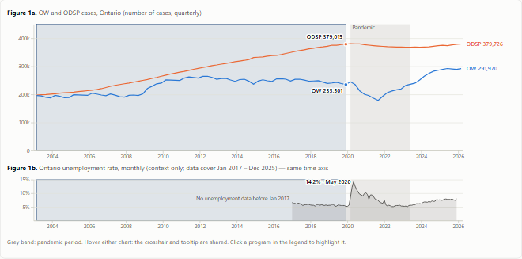

Q1 · candidate variants v1 (2026-11-12) — for the group to compare and choose. Design rationale: Q1_DESIGN.md · References: REFERENCES.md
Part 1 of 3 · Overall trends · OW and ODSP, all of Ontario
Q1: four candidate designs to choose from
All four answer the same question for the same audience — How did OW and ODSP caseload trends differ before, during, and after the COVID-19 pandemic? — with the same data, colours and page skeleton as Part 3. They differ in view form, narrative and main encoding. Every number on every candidate is computed from the course CSVs in the browser.

A · Annotated timeline
Two lines on one scale, a cases / index toggle, three story steps, then free exploration.
Motivation
The question is about levels over time; position on a common scale is the most accurate channel (L3).
Appeal
One annotated picture for a briefing: OW's dip and rebound against a flat ODSP line.
Cost
Familiar form, little novelty; rates of change must be read from slopes.
Course basis
L3 effectiveness · L4-1 alignment and enclosure · L5 change mapping, navigation, linked crosshair · L6 martini glass, annotation.
A connected scatterplot (ODSP across, OW up), a time slider with Play, a reading key and a companion timeline; an optional orthographic 3D view adds time as depth.
Motivation
"Together or apart" becomes the direction of one path; equal scaling makes 45° mean equal growth. In 3D, the path and the two time charts appear as three faces of one cube.
Appeal
The most memorable shape: a long rightward drift, then a near-vertical drop and climb; the cube turning into each familiar chart.
Cost
Unfamiliar; readers confuse order and direction more often (Haroz et al., 2016); the pandemic legs overlap; 3D adds occlusion and rotation, so values are read only in the flat views.
Course basis
L2 derived index · L3 position for both series, no unjustified 3D · L5 navigation (slider, presets), linked views · L6 guided tour · L7 space-time cube flattening.
A starting point for the meeting; details and evidence in Q1_DESIGN.md §8.
Criterion
A · Timeline
B · Change
C · Long view
D · Path
Clarity for a first-time reader
High
Medium (needs the change definition)
Medium–high (two series to explain)
Low–medium (needs the reading key)
Analytical depth
Medium: levels, index, periods
High: direction, speed, agreement, per-year rates
Medium–high: historical scale + detail
Medium: relative movement only
Creativity (R10)
Low
Medium
Medium
High
Development effort left
Low
Medium
Medium
High (reader testing, incl. the 3D view)
Consistency with Q2 / Q3
High (same patterns as Q3 Step 1)
Medium (different main measure)
High (brush + detail like Q3 Step 2)
Medium (unique form)
Settled decisions
All kept
Changes "counts by default"
All kept
All kept (unemployment aligned to the companion timeline)
Recommendation (the group decides)
Use A as the base and add B's period comparison (Figure 2, average annual change). A answers the question most clearly and keeps the settled decisions; B's per-period chart adds the one thing A lacks — a fair comparison of how fast each program changed in periods of very different length.
Optional: add C's long-view overview as a compact context strip above A, only if the group agrees to use the historical file and the 1998 break is explained on the page. Keep D as a possible "how to read the path" extra, not the main view, unless a quick reader test shows people read it correctly; its 3D view stays optional and is never used for reading values.
Decisions the group needs to make
Which candidate (or combination) moves to the stable path design/q1/prototype/ as the working version (these candidates are Q1 v1; tag q1-v1 before any further major change).
Growth-rate definition: year-over-year, average annual change per period, or change since 2019 Q4.
Whether to use the historical all-programs series at all, and whether the site may say "most cases since 1969" (counts, not a rate; coverage changed in 1998).
Pandemic period: the Q1 draft in RESEARCH_QUESTIONS.md says Mar 2020 – Dec 2022 with monthly data; the course data and these candidates use Mar 2020 – May 2023 with quarterly data.
Whether to move the shared CSS and helpers for all three parts into one site-wide file.